地政学
マレはインド洋の海上交通、インドと中国の影響、イスラム圏外交、気候交渉が交わる小国首都です。島は小さいが、空港、港、国会、外交団が集まり、海洋国家の主権を日々示す場でもあります。環礁が政治を抱く街です。
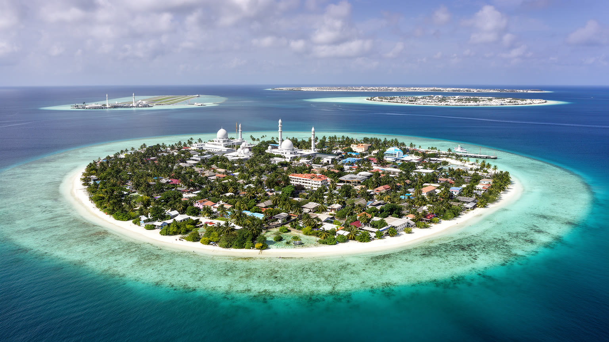
🇲🇻 モルディブ / カーフ環礁南縁 / World City Atlas
珊瑚礁の小さな島に、国会、官庁、港、病院、学校、モスク、市場、銀行、フェリー、海外労働者の住まいが詰め込まれた、インド洋の首都です。
都市の骨格
マレは巨大な観光リゾートではなく、国を動かす実務都市です。ラグーンの中で本島、空港島、フルマーレ、ヴィリンギリがフェリーと橋で結ばれ、政治、港湾、観光、住宅、移民労働が短い距離に圧縮されています。
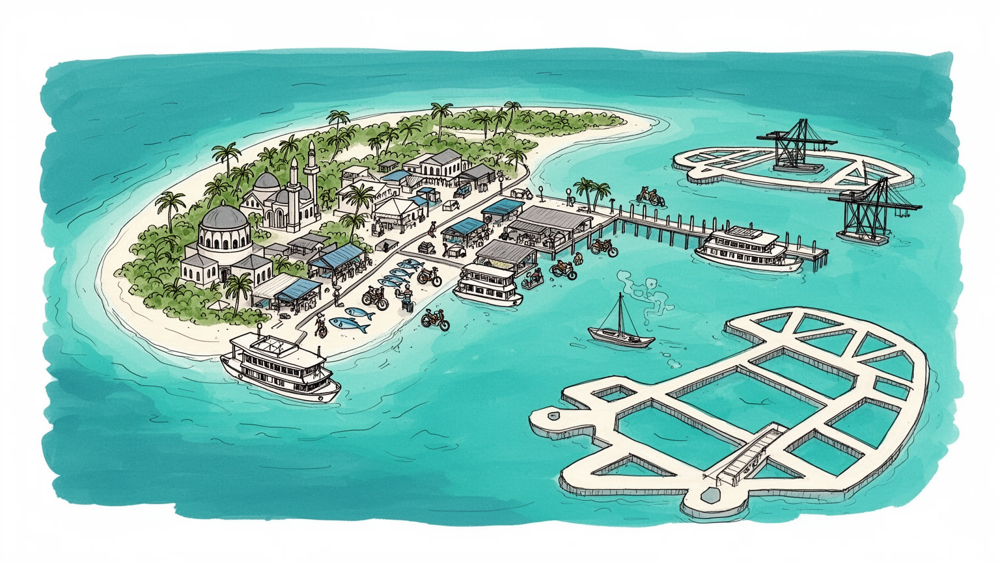
マレはインド洋の海上交通、インドと中国の影響、イスラム圏外交、気候交渉が交わる小国首都です。島は小さいが、空港、港、国会、外交団が集まり、海洋国家の主権を日々示す場でもあります。環礁が政治を抱く街です。
観光収入はリゾート島で稼がれても、予約、金融、輸入、港湾、行政、建設、人材派遣はマレに集まります。外国人労働者はホテル、建設、清掃、港で働き、島の豊かさと格差を同時に支える基盤となる都市でもある街です。
イスラムは礼拝、学校、法制度、祝祭、食、服装に深く入り、金曜モスクや近隣の小さなモスクが都市の時間を刻むのです。ディベヒ語、アラビア海交易、王宮の記憶、現代メディアが同じ島で重なる街でもある場所なのです。
旅行者は市場、港、モスク、近島リゾートへの玄関を見るが、住民は家賃、狭い住居、交通、医療、学校、海面上昇、輸入物価と向き合います。楽園の背後で、首都の生活は密度と海に揺れる毎日でもある街の現実なのです。
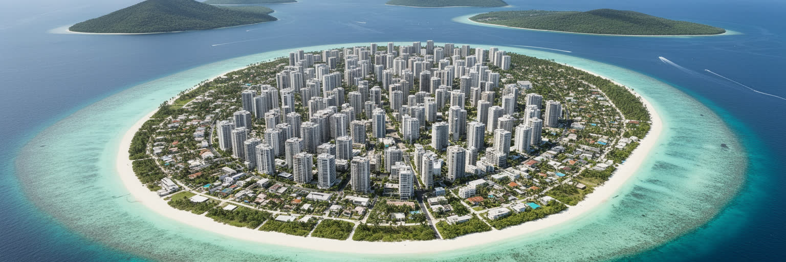
マレの第一印象は、海に浮かぶ小さな島へ都市が限界まで詰め込まれているという密度です。モルディブは二十六の環礁に島々が散らばる国ですが、国家の行政、病院、大学、銀行、港湾、市場、メディア、政治集会は首都圏へ集中してきました。マレ本島は高層化と埋め立てを重ねても余地が少なく、細い道路にバイク、タクシー、歩行者、荷下ろし、学校帰りの子どもが重なります。周辺のヴィリンギリ、空港島のフルレ、計画都市フルマーレがこの圧力を受け止めるが、橋やフェリーでつながる距離の近さは、逆に首都機能の集中を強めてもいます。低い珊瑚島では、道路の一本、岸壁の一角、雨水排水の不調がすぐ生活へ響くのです。土地不足は単なる不動産問題ではなく、住居、墓地、学校、モスク、防災、廃棄物処理を同じ面積で争わせるのです。海の青さが近いほど、都市は逃げ場の少なさを意識させるのです。マレを読むには、楽園の中心ではなく、国家の過密な作業台として見る必要があります。人口規模だけなら中都市でも、島の幅が限られるため、密度は世界でも際立つのです。屋上、路地、岸壁、地下設備まで使い切る生活は、都市の創意を生む一方、火災、冠水、騒音、家賃高騰への弱さも増すのです。首都の密度は、国の成功と限界を同時に映しています。狭さを当然視せず、公共空間を少しでも取り戻す政策が、暮らしの質を左右する道です。
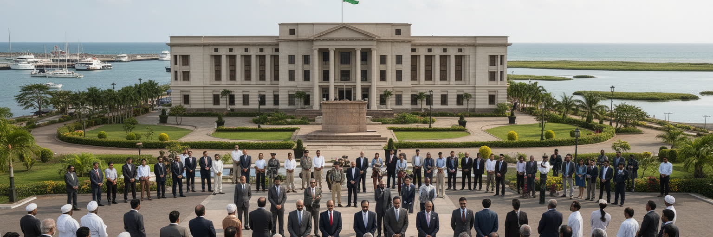
マレはモルディブの政治が最も濃く見える場所です。大統領府、国会、裁判所、官庁、政党本部、新聞社、テレビ局、大学、外国公館が近い距離にあり、政治的な緊張や抗議行動も島の路上で可視化されます。人口と土地は小さいが、外交の舞台は広いです。モルディブはインド洋の航路上にあり、インド、スリランカ、中国、中東、欧州、日本、国際金融機関との関係を調整しながら港、空港、住宅、観光、債務、海洋安全保障を動かします。気候変動交渉では、海面上昇に直面する低島嶼国の象徴として発言力を持つ一方、国内では生活費、住宅、若者の雇用、政治的分断が重いです。首都が小さいため、国際政治は住民の生活と遠くありません。空港拡張の資金、橋の建設、港湾移転、外国人労働者の規制、リゾート開発の許認可は、外交文書だけでなく日々の通勤や家賃にもつながります。マレを歩くと、世界の大国間競争が豪華な会議場だけでなく、狭い路地の交通、港の倉庫、若者の進学、病院の設備として現れることが分かります。島国の主権は、広い海域を管理しながら、小さな首都で制度を保つ力にかかっています。選挙や裁判の結果は、地方環礁へもフェリー、学校、医療予算として伝わります。マレの政治は、海の境界を守る外交と、島内の暮らしを整える行政の両方を同時に背負っています。中央集権の便利さと危うさが、首都の狭さの中で常に露出します。
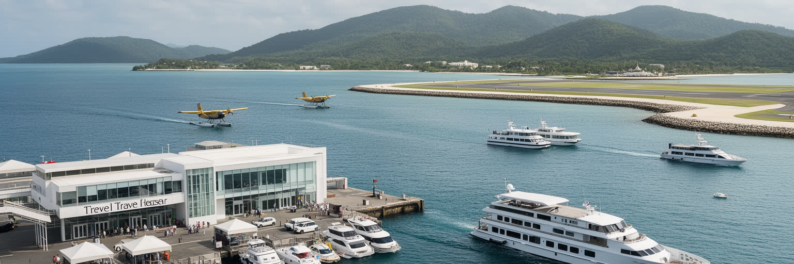
モルディブ観光の象徴は水上ヴィラや珊瑚礁のリゾートですが、その背後で予約、金融、行政、物流、人材、医療、空港手続き、港湾補給を動かすのがマレです。旅行者の多くは空港からリゾートへ直行し、首都を短く通過するだけかもしれありません。しかしリゾート島で使われる食材、燃料、建材、清掃用品、医薬品、通信、人員の多くは、マレ圏の港、倉庫、事務所、銀行、移民管理、訓練機関に支えられるのです。観光は高い外貨収入を生む一方、輸入依存、季節変動、感染症、航空便、燃料価格、為替、環境負荷に弱いです。リゾートの華やかさは、首都で働く事務職、船員、荷役、警備、清掃、調理、建設、送迎、整備の労働に乗っています。観光収入が国全体へどう分配されるかは、マレの政治と社会を左右する重要な問題です。地元住民の雇用を増やすのか、外国人労働者に頼るのか、海と島の負荷をどう抑えるのか、税収を住宅や医療へどう戻すのかが問われます。マレを見れば、リゾート経済が単なる余暇産業ではなく、国家財政と都市生活を組み立てる基幹産業であることが分かります。観光客が見ない場所ほど、観光を支える仕事が密集しています。旅行会社の小さな事務所、空港島への連絡船、港の冷蔵庫、労働者の宿舎が、青い海のイメージを現実のサービスへ変えています。観光の強さは、首都の地味な実務の厚みによって保たれています。
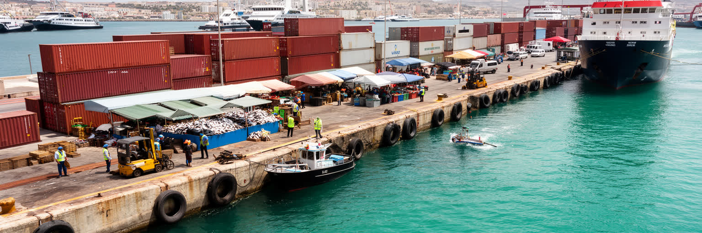
マレの港は、島国の首都がどれほど外部世界に依存しているかをはっきり示します。コンテナ船、フェリー、漁船、燃料輸送、リゾート向け補給、建設資材、冷凍食品、米、野菜、医薬品、機械部品が、限られた岸壁と倉庫へ集まります。モルディブは美しい海に囲まれていますが、都市の食卓と建設現場は輸入に大きく支えられ、港が止まれば価格と供給はすぐ不安定になります。魚市場ではマグロなどの水産物が並び、地元漁業の力を見せる一方、店先には海外から来た加工食品や日用品が積まれるのです。島の自給は完全ではなく、観光客と住民と外国人労働者の需要が同じ物流網を使うため、港湾の効率は生活費に直結します。港湾拡張や移転、人工島の利用は、経済成長だけでなく、交通混雑、騒音、排水、海の埋め立て、岸辺の公共性にも影響します。マレの港を単なるインフラとして見ると、その社会的な重さを見落とすのです。ここでは世界市場の価格、インド洋の航路、通関手続き、冷蔵設備、労働者の安全、狭い道路の渋滞が、家庭の夕食や家賃や学校費へつながっています。港は海に開いた窓であると同時に、首都の弱点でもあります。船便の遅れ、荒天、燃料費の上昇、倉庫不足は、島では代替しにくいです。だから港の管理は国家の安全保障でもあります。岸壁の働く風景は、観光広告に映りにくいが、都市を生かす最前線です。港の透明な運営は、物価への信頼を守る制度でもあります。
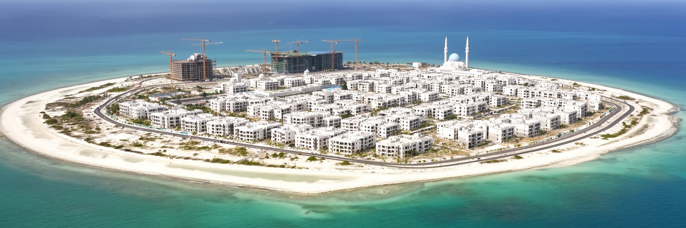
フルマーレは、マレの過密と海面上昇への答えとして造られた人工島です。空港島の近くに埋め立てられ、橋や道路で首都圏と結ばれたこの島には、集合住宅、学校、公園、商店、オフィス、海岸、モスクが計画的に配置されてきました。マレ本島が歴史的な首都であるなら、フルマーレは国が将来の居住空間をどう作るかを試す実験場です。土地を広げることは住宅不足を和らげるが、同時に珊瑚礁の生態、海流、工事費、地盤、排水、交通、社会的な孤立をめぐる課題を生みます。新しい街区にはエレベーター付き住宅や広い道路がある一方、家賃、通勤、公共交通、学校定員、若者の居場所は依然として問題になります。フルマーレは避難先や未来都市として語られやすいが、そこに住む人にとっては、エレベーターの保守、買い物、職場への移動、近所づきあい、海岸の使い方が日常です。人工島は技術の勝利だけではなく、社会を新しく組み直す場所でもあります。マレ本島の記憶や親族関係を持つ人が移り住む時、都市の中心は少しずつ広がります。計画都市が暮らしの厚みを持つには、住宅の数だけでなく、学校、医療、祈り、遊び、仕事、公共交通が育たなければなりません。人工島は海に対抗する壁ではなく、海と共に住む新しい作法を試す舞台です。成功するかどうかは、埋め立て面積よりも、そこに住む人々が街を自分の場所と感じられるかにかかるのです。
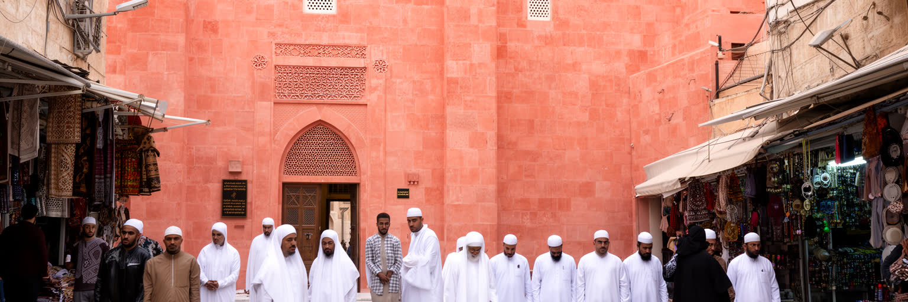
マレの都市文化を理解するには、イスラムを風景の一部ではなく、生活時間を組み立てる基盤として見る必要があります。礼拝の呼びかけ、金曜の集まり、ラマダンの食卓、宗教教育、結婚、葬儀、服装、食の規範は、家庭と公共空間の両方に深く入り込むのです。古い金曜モスクに見られる珊瑚石の建築や墓地、王宮の記憶は、インド洋交易とイスラム化の歴史を伝えるのです。ディベヒ語の新聞やテレビ、学校、SNS、音楽、若者文化は、信仰と現代的な都市生活の間で絶えず調整を続けています。リゾートで消費される開放的な南国イメージと、首都の日常にある宗教的な秩序は同じ国の別の顔です。観光客がマレを歩く時、礼拝時間、服装、写真撮影、飲食の作法を尊重することが重要になります。宗教は都市を閉じるだけではなく、共同体の助け合い、慈善、学校、規範、政治参加を支える仕組みにもなります。一方で、若者や女性、多様な価値観をめぐる緊張も存在し、首都ではその議論が最も見えやすいです。マレの文化は、古いモスクの静けさと、バイクの音、カフェ、メディア、海外留学経験、移民労働者の存在が同じ路地に並ぶところにあります。島の小ささは、価値観の距離も近くします。信仰、国家、家族、観光が互いに影響し合うため、文化は固定された伝統ではなく、毎日の判断として生きています。礼拝後の路上や市場の会話にも、都市の規範と変化が表れるのです。
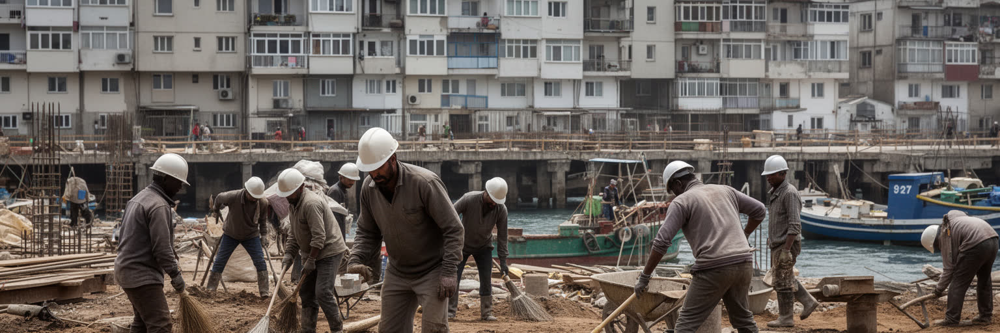
マレの建設現場、港、清掃、飲食、警備、小売、リゾート関連サービスでは、多くの外国人労働者が働いています。バングラデシュ、インド、スリランカ、ネパールなどから来た人々は、都市の成長と観光産業を支える重要な力である一方、狭い宿舎、賃金未払い、仲介手数料、在留手続き、医療アクセス、言語の壁、差別に直面しやすいです。人口統計だけを見ると外国人は労働力として数えられるが、都市の路地では同じ店で買い物をし、同じ港で荷を運び、同じ雨に濡れ、家族へ送金する生活者でもあります。モルディブの高い一人当たり所得は、観光収入と外国人労働に支えられているため、格差の読み方は単純ではありません。地元住民の失業や住宅難と、移民労働者の不安定な立場が同時に存在します。マレの社会問題を語るには、国民と外国人を切り離すだけでなく、誰が都市の便利さを作り、誰が狭さとリスクを引き受けているのかを見る必要があります。港で荷を下ろす人、夜に道路を清掃する人、建物の骨組みを組む人、ホテルの厨房で働く人がいなければ、首都もリゾートも動きません。労働条件の改善は人権の問題であると同時に、都市の安全と経済の持続性を守る課題でもあります。多言語情報、労働監督、相談窓口、適切な住環境は、見えにくいが首都の重要なインフラです。彼らの暮らしを都市計画に含めることが、観光国家の公平さを測る基準になります。
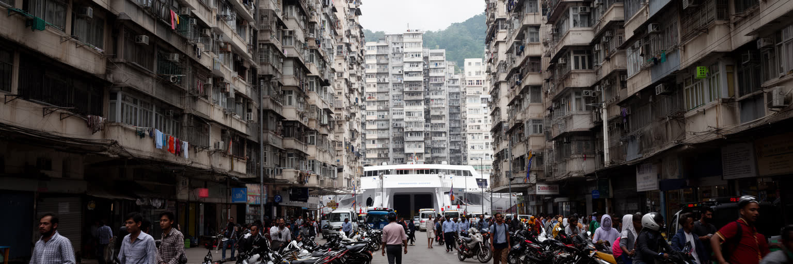
マレの日常生活は、住まいの狭さと移動の近さが同時にあります。島は小さいため、多くの用事は短い距離で済むが、人口密度が高く、道路幅が限られ、バイクや車、歩行者、荷物、子ども、高齢者が同じ空間を使います。家賃は高く、家族や若者、外島から来た学生、外国人労働者は限られた部屋を分け合うことも多いです。住宅は高層化し、屋上や階段、ベランダ、共有廊下が生活空間の一部になります。学校、病院、役所、港、店が近い便利さはありますが、騒音、駐車、火災、換気、プライバシー、廃棄物、冠水が日常の負担になります。ヴィリンギリやフルマーレへの移動はフェリーや橋に依存し、通勤時間や天候、混雑は生活のリズムを左右します。首都の交通問題は大都市の渋滞とは違い、島という閉じた空間で何を優先するかという選択です。歩行者を守るのか、物流を通すのか、バイクを減らすのか、駐車をどう管理するのかが問われます。小さな道路の設計は、都市の公平性を映します。子どもが安全に歩ける路地、雨の日にも動ける排水、夜でも明るい歩道、救急車が入れる道は、派手な開発よりも生活を支えます。マレの暮らしは、海の近さよりも、隣人との距離の近さを日々感じる都市生活です。密度を我慢の問題にせず、公共空間として整えることが問われています。住まいと道の改善は、家族の時間と健康を守る政策でもあり、とても大切です。
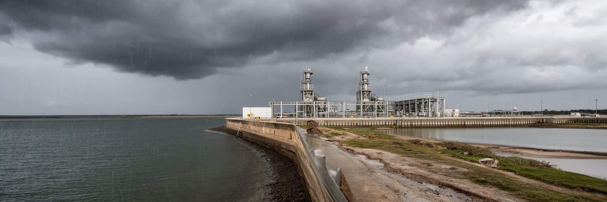
マレは気候危機を象徴する都市です。平均標高の低いモルディブでは、海面上昇、高潮、強い雨、海岸侵食、珊瑚礁の劣化が、観光だけでなく住宅、港、空港、病院、学校、電力、通信を脅かすのです。首都の飲み水は淡水化や地下水管理に頼り、過去の水危機は、島のインフラが一つ壊れるだけで生活が止まることを示しました。雨季の排水、塩水浸入、廃水処理、海岸の防護、発電燃料の確保は、すべて都市の生存条件です。気候適応は防潮壁を造るだけでは足りません。どの施設を守るのか、人工島をどう高く作るのか、避難や保険をどう設計するのか、観光収入を環境対策へどう回すのか、住民と外国人労働者へ情報をどう届けるのかが問われます。国際会議で語られる低島嶼国の危機は、マレでは水道料金、停電、冠水した道路、港の遅れ、学校の休校として現れます。海は国の魅力であり、同時に毎日のリスクでもあります。だからマレの気候政策は、世界への訴えと、路地の排水溝を詰まらせない実務の両方を必要とします。珊瑚礁が波を弱め、海岸の砂を保ち、観光の基盤にもなることを考えれば、環境保全は都市インフラの一部です。水と海を管理する力が、首都の未来を決めます。淡水化施設の予備能力、燃料備蓄、配水の公平性、非常時の情報伝達は、気候適応を生活の制度に変えます。海辺の小さな排水改善も、島全体の安心に直結します。
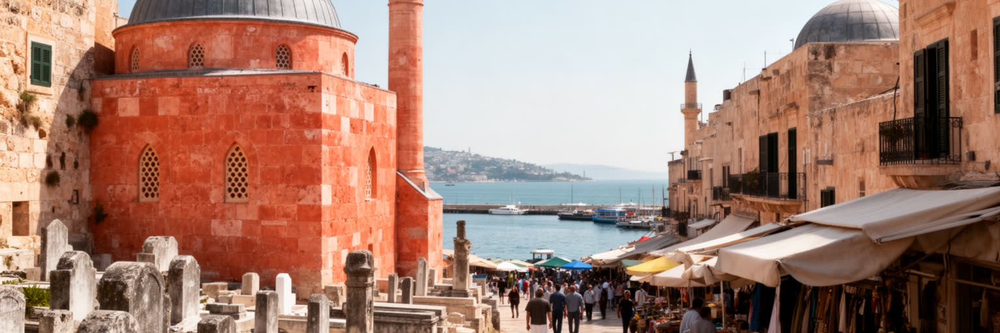
マレは現代の過密な行政都市であると同時に、モルディブの王都としての記憶を持ちます。かつて宮殿や城壁があり、交易、イスラム化、スルタン制、英国保護領、独立、共和国化の歴史がこの小さな島を通ってきました。古い金曜モスク、墓地、珊瑚石の細工、王家や学者の記憶は、急速に建て替えられる市街地の中で貴重な時間の層を残しています。観光客は短時間で市場やモスクを見ることが多いが、マレの歴史は展示物だけではありません。海上交易で入った宗教、言語、文字、法、食、服装が、現在の学校や家庭の作法にも続いています。近代化の過程では、城壁や宮殿の多くが失われ、道路や行政施設が整えられたのです。歴史的な景観を守ることは、土地不足の都市では難しいです。古い建物を残す余地、修復費、宗教的な尊重、防災、観光利用、住民の生活がぶつかるからです。それでもマレの歴史を失えば、リゾートの国という単純なイメージだけが残ってしまうのです。王都の記憶は、モルディブが単なる観光地ではなく、インド洋に長い交易と信仰の歴史を持つ社会であることを示します。古い墓石の文様、モスクの木彫、路地の名前、市場の魚の扱い方には、島々を束ねてきた政治と文化の跡があります。未来の都市を作るほど、過去を読める場所を残す意味は大きくなります。学校や博物館がこの記憶を日常の言葉で伝えれば、若い世代は首都を単なる混雑した島ではなく、歴史の中心として受け止められるのです。
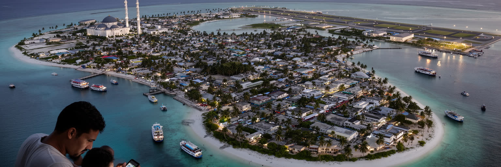
マレをリゾートへの通過点としてだけ見ると、この都市の重要さは見えにくいです。ここには国会、裁判所、港、空港への連絡、病院、大学、魚市場、モスク、銀行、旅行会社、移民労働者の宿舎、外島から来た学生の生活が詰まっています。モルディブの美しい海は、観光資源であると同時に、土地不足、輸入依存、気候危機、外交交渉、労働格差を生む条件でもあります。マレはその矛盾を最も強く引き受ける場所です。人口は巨大ではありませんが、結節の密度は高いです。リゾート島の収入、港のコンテナ、礼拝の時間、政治抗議、フルマーレの住宅、外国人労働者の送金、海面上昇への不安が、短いフェリー圏の中で絡み合うのです。都市の魅力は、南国らしい美しさだけではなく、限られた土地で国家を運営し続ける実務の緊張にあります。マレを歩くことは、観光の表舞台から一歩裏へ入り、島国が世界経済と気候時代にどう適応しようとしているかを見ることでもあります。青いラグーン、白いモスク、混んだ路地、魚市場、港湾倉庫、人工島の集合住宅は、別々の景色ではなく一つの都市の部品です。マレは楽園の裏側というより、楽園を現実の国家として成立させる作業場です。その小さな島から、海辺の都市がこれから直面する課題が早く見えてきます。観光、信仰、労働、外交、気候がここまで近接する都市は少ありません。その近さこそが、マレを読む理由です。